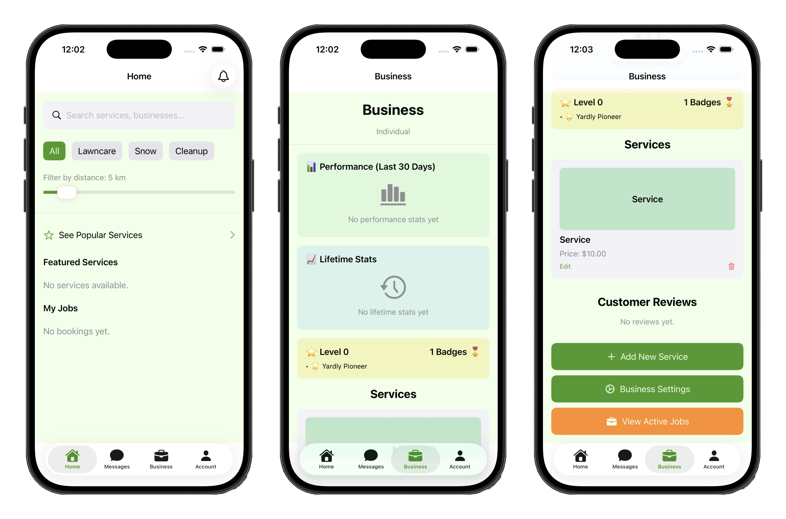
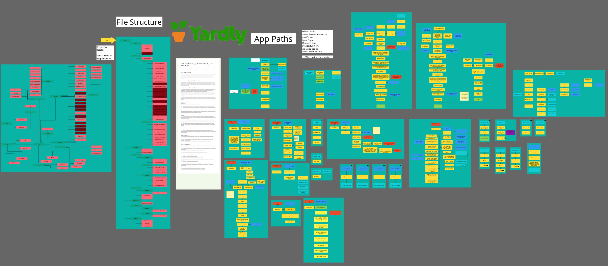
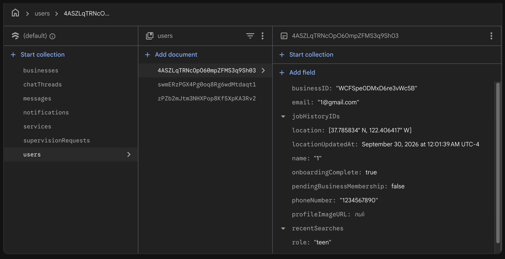

Yardly

Three screens from Yardly — the customer and business-management sides of the app.
A full-stack iOS app that lets neighbors book small, local lawn-care crews — and lets young providers actually run a small business, with a guardian watching over their shoulder.
Yardly started from a simple observation: plenty of teenagers want to earn money mowing lawns, and plenty of neighbors would happily hire them, but there was no trustworthy way to connect the two. I designed and built Yardly as the founder and solo developer to be that bridge — a marketplace where customers discover nearby services, book a job, track it in real time, and pay, while young providers get a guided, supervised way to operate.

The original Miro board where I mapped out Yardly’s user flows, data model, and system design before writing any code.
The app is built in Swift and SwiftUI on an MVVM architecture, backed by Firebase. Customers can browse available services, request bookings, follow a job through to completion, and leave reviews. On the provider side, Yardly includes a full business-management layer: creating and configuring a service business, handling incoming jobs, and — importantly for younger users — a guardian-supervision system so a parent can oversee and approve their kid’s activity.
One of the pieces I’m most proud of is the real-time chat, built on Firebase Firestore, which keeps customers and providers coordinated on the details of a job. Combined with live job tracking, it made the whole exchange feel dependable rather than ad-hoc.

A look at the Firestore NoSQL structure behind Yardly’s real-time chat and job tracking.
Yardly reached a working MVP, but development was terminated just before the MVP was fully finished. It remains one of my favorite projects to have written the code for end-to-end — product design, real-time data modeling, auth, and a genuinely tricky trust-and-safety problem — largely on my own.